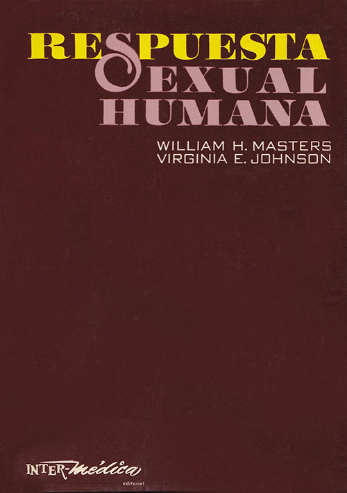
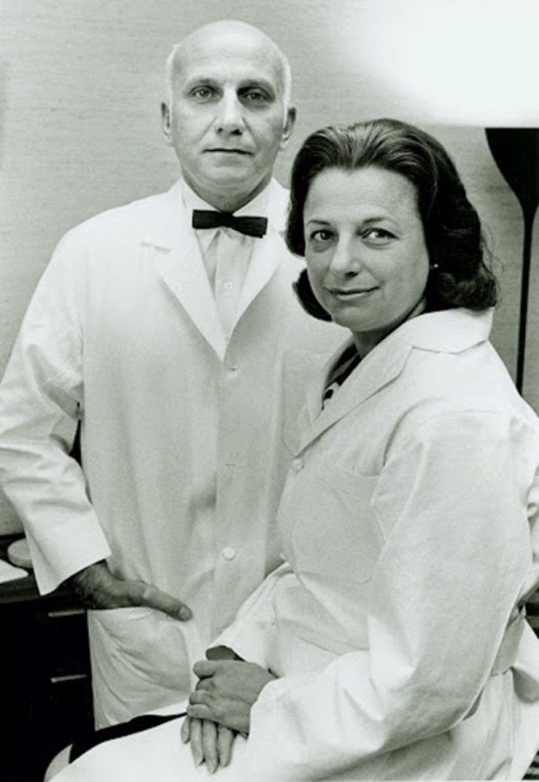
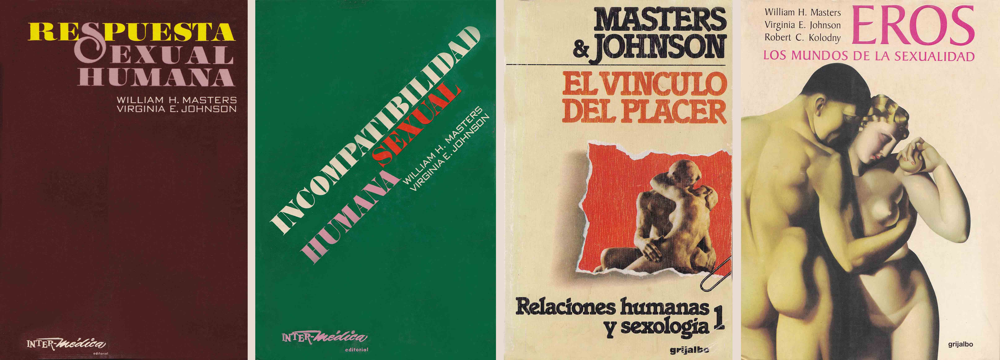

Masters & Johnson:
Respuesta Sexual Humana
William Howell Masters nació en Cleveland, Ohio el 27 de diciembre de 1915, hijo de Francis Wynn Masters, un padre violento y abusador, y de Estabrooks Taylor Masters, mujer sumisa, incapaz de frenar los impulsos de su marido. A pesar de ello, William fue un alumno brillante cuyos estudios en la Escuela de Lawrenceville fueron soportados por su tía Sally. Asistió y se graduó en la universidad de Hamilton. Se matriculó en la Universidad de Medicina de Rochester, y recibió su título de médico en 1943. En 1942, se casó con su primera esposa, Elizabeth Ellis, quien era conocida como Libby o Betty. La pareja tuvo dos hijos. Fue docente en la facultad de Medicina de la Universidad de Washington en Saint Louis desde 1947 y en 1957 comenzó sus estudios sobre la fisiología sexual humana con la colaboración de Virginia Johnson.
Ambos publicaron los resultados de sus investigaciones en el libro Respuesta sexual humana (1966) que fue un éxito editorial inesperado, ya que se trataba de un texto dedicado a los profesionales de la medicina. Más tarde publican Incompatibilidad sexual humana (1970), Homosexualidad en perspectiva (1979) y El vínculo del placer (1975), que refutaban una serie de opiniones muy extendidas acerca del orgasmo, la impotencia, la frigidez y la homosexualidad. Junto con Robert C. Kolodny publicaron La sexualidad humana (1982) y Heterosexualidad,(1994).
Masters se divorció de su primera esposa, Elizabeth Ellis, para casarse con Virginia Johnson en 1971. Se divorciaron dos décadas más tarde, poniendo fin a sus investigaciones y al instituto que habían fundado para llevarlas a cabo. Aquejado de la enfermedad de Parkinson durante sus últimos años, falleció el 16 de febrero de 2001 en Tucson, Arizona, acompañado de su tercera esposa, Geraldine Baker, su amor de juventud.
Mary Virginia Eshelman nació en una granja de Springfield, Missouri, Saint Louis el 11 de febrero de 1925, hija de Hershel Harry Eshelman y Edna Evans, fue primero cantante y se casó con el músico George Johnson, de quien tomó el apellido por el resto de su vida. Tuvo dos hijos con él y luego se divorció. Para sostener a su familia, comenzó a trabajar en la Facultad de Medicina de la Universidad Washington en Saint Louis, a las órdenes de William Masters, con quien comenzó una secreta investigación sobre la sexualidad humana. Contribuyó aportando ideas sobre métodos, reclutando voluntarios para realizar mediciones durante el coito, y más tarde junto con Masters, experimentaron ellos mismos. Se casó con él en 1971 más que nada para mantener la sociedad que les permitía realizar sus investigaciones y terapias. Sin embargo, no eran buenos en el manejo económico, lo que llevó a la desaparición del instituto que habían creado tan pronto se divorciaron. Durante su carrera, prepararon a decenas de terapeutas sexuales y puede decirse que Masters y Johnson son los verdaderos padres de la sexología moderna.
El éxito editorial entre el público lego de una obra de las características de Human Sexual Response, no podría haberse producido en un ambiente más liberal como el actual. Sucedió lo mismo con Psycopathia Sexualis (1886) del psiquiatra alemán Richard von Krafft-Ebing, o Conducta Sexual del varón (1949) y Conducta Sexual de la Mujer (1953) de Alfred Kinsey y sus colaboradores de la Universidad de Indiana. Estos libros fueron publicados en épocas de fortísima censura sexual y lo que llevó al público a adquirirlos no fue tanto la curiosidad científica, sino una forma de violar la censura para conseguir material erótico de cualquier clase. A los ojos modernos las obras son aburridas si se las mira desde ese punto de vista pero en su momento, la sola mención de ciertas palabras encendía la libido tanto como ver un tobillo de mujer.
Respuesta Sexual Humana se tradujo a muchos idiomas y hay disponibles copias digitales de la versión en español para ponerlas al alcance del público. No sería justo que una obra de tal importancia, piedra de toque de la revolución sexual de fines del siglo XX y de la liberación sexual femenina, se pierda solo porque las editoriales hayan abandonado su publicación. Respuesta Sexual Humana y Masters & Johnson, de Thomas Maier.
